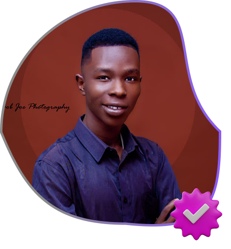

THEOPHILUS
IFEOLUWA OKE
I am a tech-driven creative professional specializing in full-stack
development,
UI/UX design, graphic design, and WordPress solutions.
As the Creative Director of TEOK Innovation, I focus on helping
small and growing
businesses build strong digital identities through functional,
user-friendly, and visually
compelling solutions. I am passionate about combining technology and
creativity to solve
real-world problems and deliver impactful digital experiences.

WHAT I DO?
I provide technology and creative solutions that help businesses
establish and grow their digital presence.
My work covers full-stack web development, UI/UX design, graphic
design, WordPress development, IT support, and tech solutions for
small and medium-scale enterprises. I focus on building functional,
user-friendly, and visually engaging digital products that improve
business operations and customer experience.